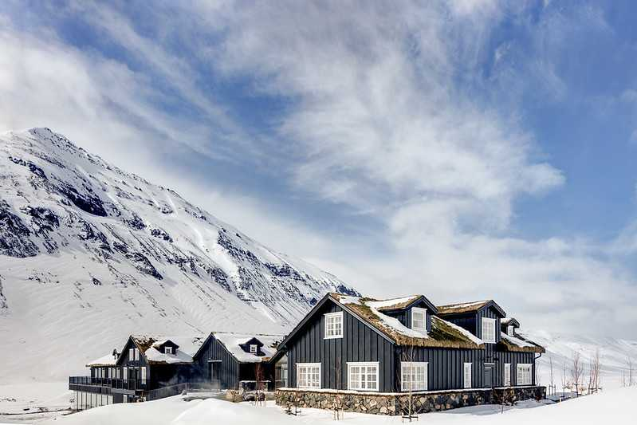
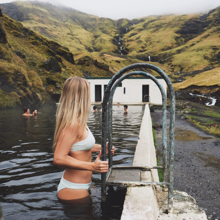

ICELAND TRAVEL GUIDE
Iceland is the perfect destination for a seasoned traveler, a first-time solo traveler, or an adventurous family looking to road trip around the island. With friendly locals, stunning scenery, tons of adventure, and a lively tourism scene, you should experience Iceland at least once in your lifetime. I’ve been back twice now, and every trip brings something new
The highlights of my trips have been a road trip around Iceland’s Ring Road, scuba diving the Silfra Fissure, exploring the Golden Circle, trying local seafood in Reykjavik, and of course, lounging in the Blue Lagoon and other hot springs around the island. There is no shortage of adventure in Iceland!

BEST TIME TO VISIT
The best time to travel to Iceland all depends on what you want to do. From April to May, it’s spring, and it’s the perfect season for fishing, golfing and exploring the outdoors.
The summer months of June to August are one of the busiest periods for Iceland. It is the most expensive time to visit, so be sure to book your flights and accommodation in advance.
October to September things start cooling down, but it’s still possible to drive the Ring Road. Mid-Winter you’ll be limited on where you can travel due to the snow, but it’s the best time to experience the Northern Lights in Iceland.
WHAT TO EXPECT
Language: The main language spoken is Icelandic, as well as English in the touristy areas.
Currency: The currency in Iceland is the Icelandic króna, but many places will also accept the Euro and the US Dollar. 1 USD is equivalent to about 119,60 ISK.
Icelandic hikes: six of the best
- Laugavegur
- Jökulsárgljúfur
- Hornstrandir
- Þórsmörk
- Skaftafell
- Photographing the Northern Lights
7 best places to visit in Iceland
- Hiking in Hornstrandir
- The Interior
- Geysir
- Whale watching in Húsavík
- The Northern Lights
- Iceland’s best beaches
- The Museum of Witchcraft and Sorcery
- Iceland travel itineraries
How to Get Around Iceland
- Campervan
-
If you’re planning to explore the whole island, I highly recommend hiring a campervan in Iceland! You’ll save money on accommodation, and it’s the best way to explore the country’s famous Ring Road!
- Rent a Car
-
In the warmer seasons, you can rent a normal car in Iceland and still plan a road trip around the country. Keep in mind that although there are a lot of car rental companies in Reykjavik, the cars book out quickly, especially the cheaper options.
- Tours
-
If you’d rather have someone else handle all the logistics for your trip to Iceland, book a spot on an organized tour. My favorite tour company for day trips is Arctic Adventures. You can base yourself in Reykjavik and join a variety of small group day tours.
BALTASAR KORMAKUR
ICELAND IS BEAUTIFUL. SOMETIMES IT’S HARD TO IMAGINE LIVING ANYWHERE ELSE.via: theblondeabroad.com